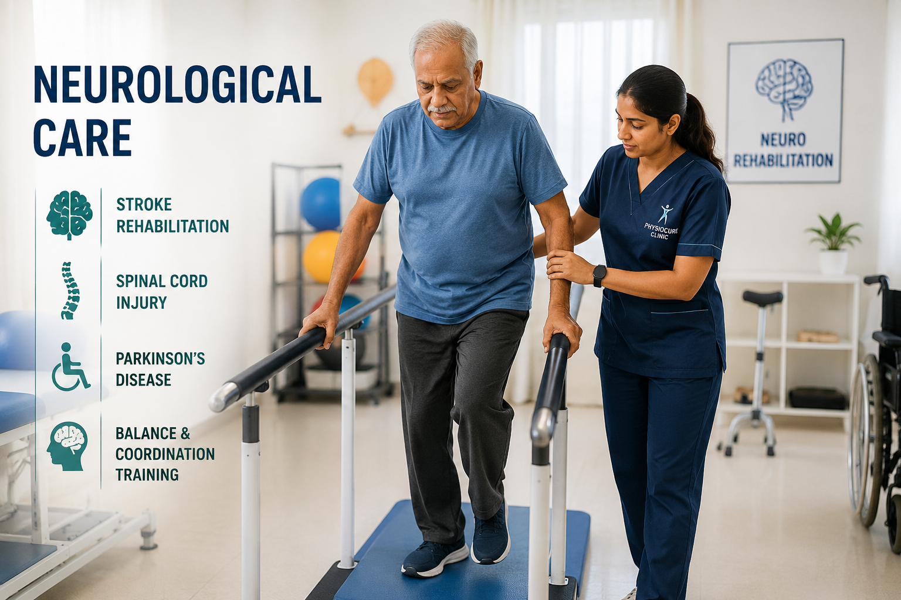

Neurological Care
Physiotherapy can play an important role in helping people with neurological conditions improve movement, balance, coordination, strength and functional independence. Treatment is planned according to the individual's abilities and rehabilitation goals.
Explore Stroke Rehabilitation